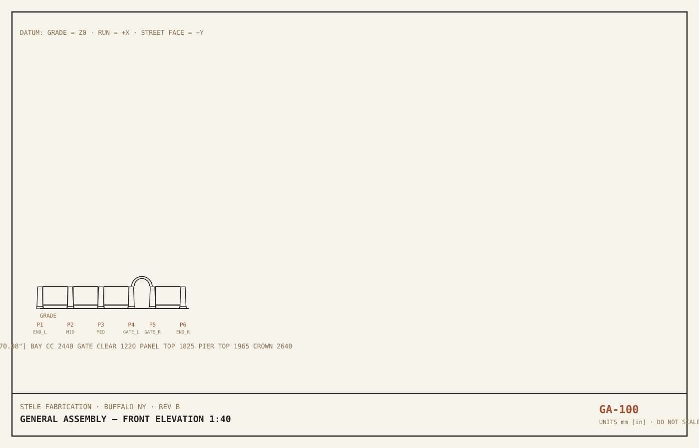
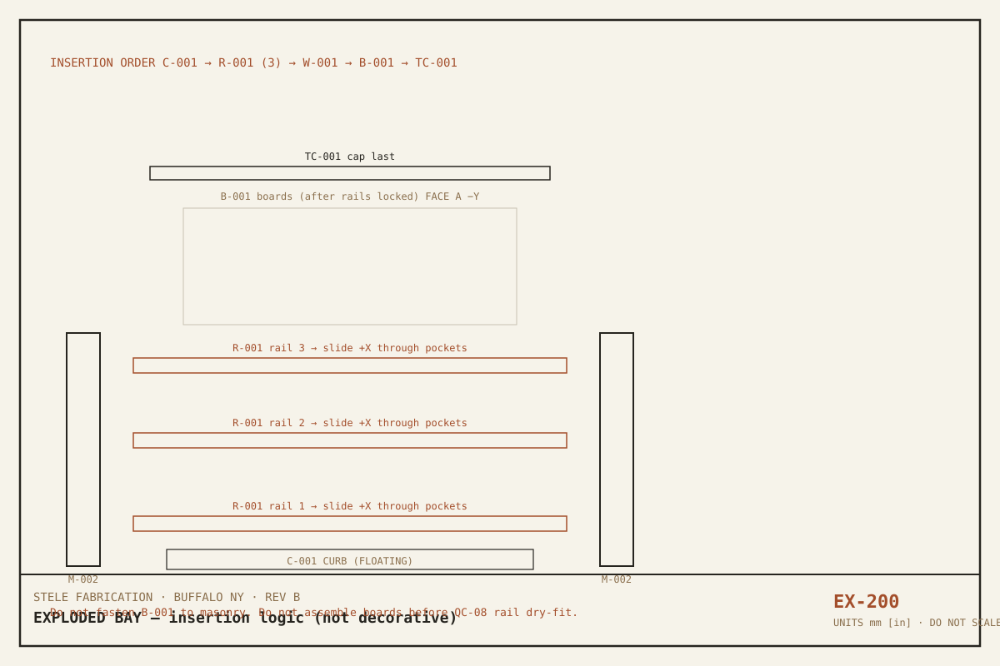
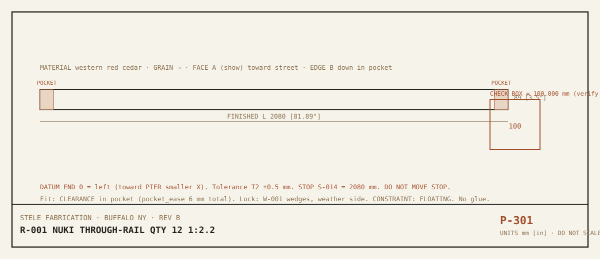
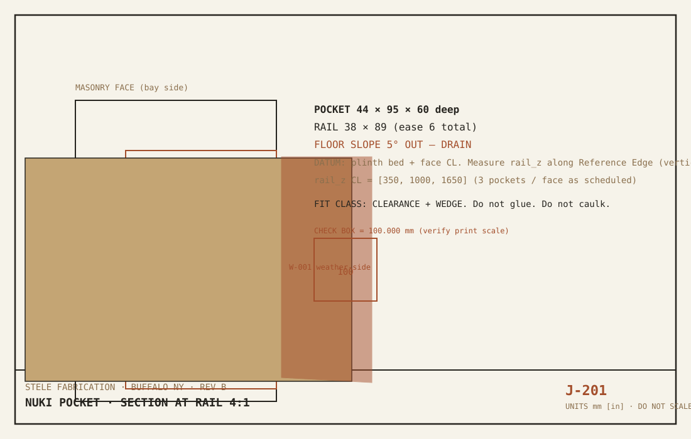
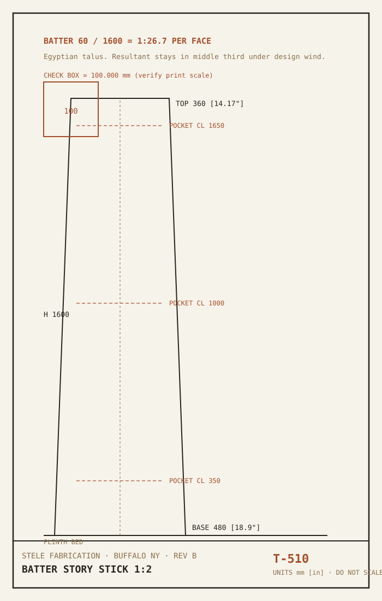
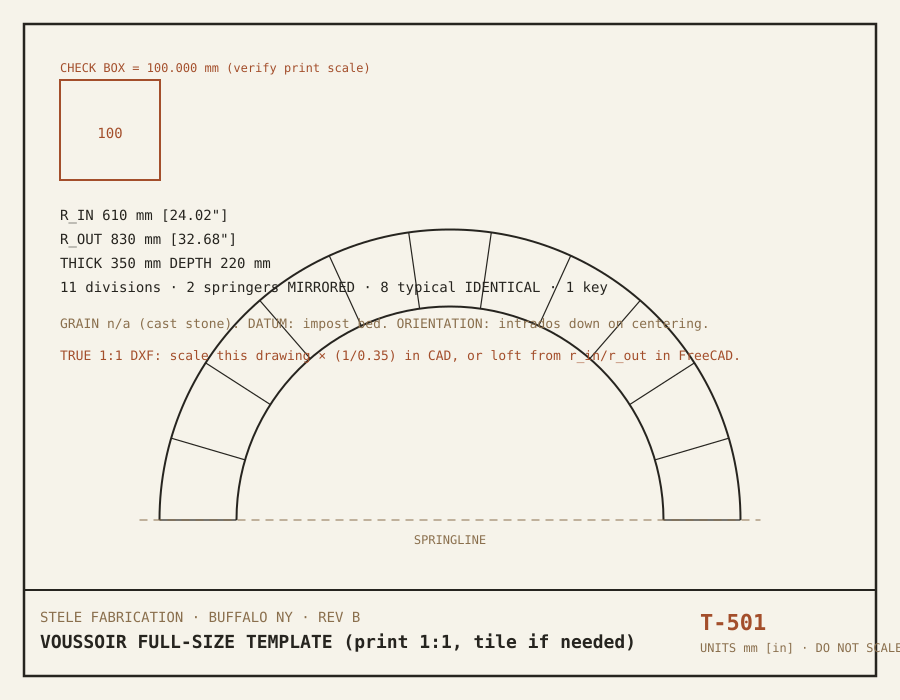
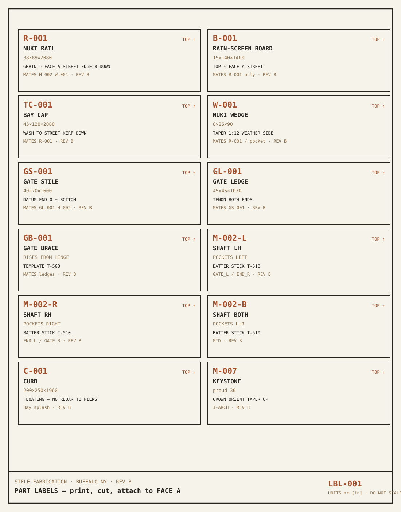

M0–M8Existing-model audit (MODE B)
Source audited: fence/stele/cad/stele_fence.py + HASHIRA OpenSCAD studies + plan SVGs generated from a second copy of the same numbers.
| Criterion | Before (Rev A) | After (Rev B) |
|---|---|---|
| Architecture | WEAK — four material blobs (Masonry/Timber/Concrete/Gravel), no Part IDs | GOOD — semantic registry, persistent IDs |
| Parameterization | WEAK — P dict in CAD, duplicated in gen_stele_plans.py | GOOD — this file is the only numeric source for schedules |
| Part separation | CRITICAL — cannot extract a rail from the compound | GOOD — R-001 qty 12, etc. |
| Metadata | CRITICAL — none | GOOD — Fabrication properties on every part |
| Assembly hierarchy | WEAK — implicit loop order | GOOD — A-FND / A-PIER / A-BAY / A-GATE / A-LEAF |
| Joinery as data | CRITICAL — pockets only as booleans | GOOD — J-N* instances + J-ARCH + J-HOZO-LEAF |
| BOM / cut-list ready | CRITICAL | GOOD — CSV + JSON generated here |
| Drawing readiness | ACCEPTABLE architectural sheets; no part drawings | GOOD — GA/P/J/T/LBL added; S-1..S-5 remain design intent |
| Magic numbers | WEAK — 150, 90+6, 40, 1.25 leaf clip | GOOD — named; remaining CAD literals queued as D-007 |
A–BParameters & equations
If overall length changes, change n_panel_bays_* or bay_cc only. Rail length, board count, curb length, nests, and BOM quantities follow.
| KEY | MM | IN | STATUS |
|---|---|---|---|
| frost_depth | 1220 | 48.03" | VERIFIED |
| ground_snow_psf | 40 | 1.57" | VERIFIED |
| wind_ult_mph | 115 | 4.53" | VERIFIED |
| footing_w | 600 | 23.62" | DESIGN |
| footing_h | 300 | 11.81" | DESIGN |
| gravel_w | 700 | 27.56" | DESIGN |
| gravel_h | 150 | 5.91" | DESIGN |
| stem_w | 350 | 13.78" | DESIGN |
| plinth_w | 560 | 22.05" | DESIGN |
| plinth_h | 150 | 5.91" | DESIGN |
| shaft_base | 480 | 18.9" | DESIGN |
| shaft_top | 360 | 14.17" | DESIGN |
| shaft_h | 1600 | 62.99" | DESIGN |
| cap1_w | 560 | 22.05" | DESIGN |
| cap1_h | 50 | 1.97" | DESIGN |
| cap2_w | 470 | 18.5" | DESIGN |
| cap2_h | 55 | 2.17" | DESIGN |
| pyr_base | 380 | 14.96" | DESIGN |
| pyr_top | 180 | 7.09" | DESIGN |
| pyr_h | 110 | 4.33" | DESIGN |
| bay_cc | 2440 | 96.06" | DESIGN |
| n_panel_bays_left | 2 | 0.08" | DESIGN |
| n_panel_bays_right | 1 | 0.04" | DESIGN |
| rail_t | 38 | 1.5" | DERIVED |
| rail_w | 89 | 3.5" | DERIVED |
| pocket_depth | 60 | 2.36" | DESIGN |
| rail_z | [350, 1000, 1650] | — | DESIGN |
| board_t | 19 | 0.75" | DERIVED |
| board_w | 140 | 5.51" | DERIVED |
| board_gap | 10 | 0.39" | DESIGN |
| board_z0 | 320 | 12.6" | DESIGN |
| board_z1 | 1780 | 70.08" | DESIGN |
| tcap_h | 45 | 1.77" | DESIGN |
| tcap_w | 120 | 4.72" | DESIGN |
| curb_w | 200 | 7.87" | DESIGN |
| curb_h | 250 | 9.84" | DESIGN |
| gate_clear | 1220 | 48.03" | DESIGN |
| arch_depth | 220 | 8.66" | DESIGN |
| arch_thick | 350 | 13.78" | DESIGN |
| impost_w | 520 | 20.47" | DESIGN |
| impost_h | 60 | 2.36" | DESIGN |
| key_b | 180 | 7.09" | DESIGN |
| key_t | 280 | 11.02" | DESIGN |
| key_h | 300 | 11.81" | DESIGN |
| key_proud | 30 | 1.18" | DESIGN |
| n_voussoirs | 11 | 0.43" | DESIGN |
| leaf_gap | 25 | 0.98" | DESIGN |
| stile | 70 | 2.76" | DESIGN |
| ledge | 45 | 1.77" | DESIGN |
| leaf_h | 1600 | 62.99" | DESIGN |
| leaf_t | 40 | 1.57" | DESIGN |
| leaf_z0 | 150 | 5.91" | DESIGN |
| gate_board_w | 90 | 3.54" | DESIGN |
| gate_board_t | 16 | 0.63" | DESIGN |
| gate_board_gap | 6 | 0.24" | DESIGN |
| saw_kerf | 3.2 | 0.13" | ASSUMED |
| pocket_ease | 6 | 0.24" | DESIGN |
| seasonal_ease | 1.2 | 0.05" | DESIGN |
| waste_factor_cedar | 1.25 | 0.05" | ASSUMED |
| waste_factor_masonry | 1.08 | 0.04" | ASSUMED |
| peg_d | 10 | 0.39" | DESIGN |
| wedge_t | 8 | 0.31" | DESIGN |
| wedge_w | 25 | 0.98" | DESIGN |
| wedge_l | 90 | 3.54" | DESIGN |
Design equations
| NAME | EQUATION | VALUE |
|---|---|---|
| bay_clear | bay_cc − shaft_base | 1960 |
| rail_length | bay_clear + 2 × pocket_depth | 2080 |
| board_height | board_z1 − board_z0 | 1460 |
| n_boards_bay | floor((bay_clear − gap) / (board_w + gap)) | 13 |
| n_panel_bays | n_left + 1 connecting + n_right | 4 |
| gate_span_cc | gate_clear + shaft_base | 1700 |
| spring | plinth_h + shaft_h + impost_h | 1810 |
| crown | spring + gate_clear/2 + arch_depth | 2640.0 |
| pier_top | plinth + shaft + cap1 + cap2 + pyr | 1965 |
| panel_top | board_z1 + tcap_h | 1825 |
| run_length | last_pier_x + shaft_base | 11940 |
| batter_ratio | shaft_h / ((shaft_base − shaft_top)/2) | 26.67 |
| leaf_width | gate_clear − 2 × leaf_gap | 1170 |
| cedar_bf_buy | net × waste_factor_cedar | 433.3 |
CPart register
Identical parts share one ID with qty > 1. Handed shafts are separate IDs. HASHIRA post L-001 is OPTIONAL (STELE uses masonry piers).
| PART_ID | NAME | QTY | MAKE | MAT | FINISHED T×W×L | HANDED | JOINERY | CONSTRAINT |
|---|---|---|---|---|---|---|---|---|
| F-001 | Pier footing pad | 6 | MAKE | Concrete 4000 psi AE 5–7% | 300×600×600 | IDENTICAL | FIXED | |
| F-002 | Pier stem | 6 | MAKE | Concrete 4000 psi AE 5–7% | 920×350×350 | IDENTICAL | FIXED | |
| F-003 | Gravel drainage pad | 6 | BUY | #57 crushed stone | 150×700×700 | IDENTICAL | FIXED | |
| M-001 | Pier plinth | 6 | MAKE | Cast stone or limestone | 150×560×560 | IDENTICAL | FIXED | |
| M-002-L | Battered shaft — pockets LEFT | 2 | MAKE | Cast stone (3 drums) | 1600×480×360 | LEFT-HAND | 3× nuki pockets LEFT @ rail_z | FIXED |
| M-002-R | Battered shaft — pockets RIGHT | 2 | MAKE | Cast stone (3 drums) | 1600×480×360 | RIGHT-HAND | 3× nuki pockets RIGHT @ rail_z | FIXED |
| M-002-B | Battered shaft — pockets BOTH | 2 | MAKE | Cast stone (3 drums) | 1600×480×360 | IDENTICAL | 6× nuki pockets (3L+3R) | FIXED |
| M-003 | Mayan cap stack (3 units) | 4 | MAKE | Cast stone | 215×560×180 | IDENTICAL | FIXED | |
| M-004 | Impost block | 2 | MAKE | Cast stone | 60×520×520 | IDENTICAL | FIXED | |
| M-005 | Arch springer voussoir | 2 | MAKE | Cast stone | 220×350×206 | MIRRORED | J-ARCH | FIXED |
| M-006 | Arch typical voussoir | 8 | MAKE | Cast stone | 220×350×206 | IDENTICAL | J-ARCH | FIXED |
| M-007 | Keystone | 1 | MAKE | Cast stone | 300×280×410 | IDENTICAL | J-ARCH | FIXED |
| C-001 | Splash curb | 4 | MAKE | Cast concrete or solid CMU | 250×200×1960 | IDENTICAL | FLOATING | |
| R-001 | Nuki through-rail | 12 | MAKE | Western red cedar | 38×89×2080 | IDENTICAL | Nuki 貫 through M-002 pockets; W-001 wedges both ends | FLOATING |
| B-001 | Rain-screen board | 52 | MAKE | Western red cedar | 19×140×1460 | IDENTICAL | Fastened to R-001 only — never into masonry | FLOATING |
| TC-001 | Bay timber cap | 4 | MAKE | Western red cedar | 45×120×2080 | IDENTICAL | FLOATING | |
| W-001 | Nuki locking wedge | 24 | MAKE | White oak or black locust | 8×25×90 | IDENTICAL | J-NUKI | CLEARANCED |
| GS-001 | Gate stile | 2 | MAKE | Western red cedar or locust | 40×70×1600 | IDENTICAL | Hozo ほぞ into ledges, drawbore optional | FIXED |
| GL-001 | Gate ledge | 3 | MAKE | Western red cedar | 45×45×1030 | IDENTICAL | Hozo into GS-001 | FIXED |
| GB-001 | Gate diagonal brace | 1 | MAKE | Western red cedar | 45×45×1762 | IDENTICAL | Housed into ledges — compression strut | FIXED |
| GF-001 | Gate face board | 12 | MAKE | Western red cedar | 16×90×1600 | IDENTICAL | FLOATING | |
| L-001 | Hashira post (study / repair) | 2 | MAKE | Western red cedar / black locust / white oak | 89×89×1800 | IDENTICAL | Through-mortises for nuki | FIXED |
EJoinery register
| JOINT_ID | JOINT_TYPE | PART_A | PART_B | FIT_CLASS | CONSTRAINT | LOCATION |
|---|---|---|---|---|---|---|
| J-N011 | NUKI 貫 through-pocket | R-001 | M-002-* | CLEARANCE + WEDGE (W-001) | FLOATING | Bay 1 rail 1 CL z=350 |
| J-N012 | NUKI 貫 through-pocket | R-001 | M-002-* | CLEARANCE + WEDGE (W-001) | FLOATING | Bay 1 rail 2 CL z=1000 |
| J-N013 | NUKI 貫 through-pocket | R-001 | M-002-* | CLEARANCE + WEDGE (W-001) | FLOATING | Bay 1 rail 3 CL z=1650 |
| J-N021 | NUKI 貫 through-pocket | R-001 | M-002-* | CLEARANCE + WEDGE (W-001) | FLOATING | Bay 2 rail 1 CL z=350 |
| J-N022 | NUKI 貫 through-pocket | R-001 | M-002-* | CLEARANCE + WEDGE (W-001) | FLOATING | Bay 2 rail 2 CL z=1000 |
| J-N023 | NUKI 貫 through-pocket | R-001 | M-002-* | CLEARANCE + WEDGE (W-001) | FLOATING | Bay 2 rail 3 CL z=1650 |
| J-N031 | NUKI 貫 through-pocket | R-001 | M-002-* | CLEARANCE + WEDGE (W-001) | FLOATING | Bay 3 rail 1 CL z=350 |
| J-N032 | NUKI 貫 through-pocket | R-001 | M-002-* | CLEARANCE + WEDGE (W-001) | FLOATING | Bay 3 rail 2 CL z=1000 |
| J-N033 | NUKI 貫 through-pocket | R-001 | M-002-* | CLEARANCE + WEDGE (W-001) | FLOATING | Bay 3 rail 3 CL z=1650 |
| J-N041 | NUKI 貫 through-pocket | R-001 | M-002-* | CLEARANCE + WEDGE (W-001) | FLOATING | Bay 4 rail 1 CL z=350 |
| J-N042 | NUKI 貫 through-pocket | R-001 | M-002-* | CLEARANCE + WEDGE (W-001) | FLOATING | Bay 4 rail 2 CL z=1000 |
| J-N043 | NUKI 貫 through-pocket | R-001 | M-002-* | CLEARANCE + WEDGE (W-001) | FLOATING | Bay 4 rail 3 CL z=1650 |
| J-ARCH | Radial voussoir bed (Roman) | M-005/M-006/M-007 | M-004 imposts | GLUE (Type S 10 mm joints) COMPRESSION | FIXED | Gate CL x=8170 spring z=1810 |
| J-HOZO-LEAF | Hozo ほぞ mortise & tenon | GL-001 | GS-001 | DRAWBORED / SNUG | FIXED | Gate leaf — 3 ledges × 2 stiles = 6 tenons |
| J-WATARI | Watari-ago 渡り顎 (optional upgrade) | R-001 (mid-rail) | M-002-* | FRICTION + HAUNCH | FLOATING | Wind-exposed mid-rails / gate-adjacent bays — OPTIONAL |
Nuki instances: 12 (3 rails × 4 bays). Optional watari-ago is an upgrade path, not mixed in one rail.
F / 46Master BOM
| ITEM | PART_ID | DESCRIPTION | QTY | MAKE/BUY | MATERIAL | FINISHED | HANDED | REV |
|---|---|---|---|---|---|---|---|---|
| 1 | F-001 | Pier footing pad | 6 | MAKE | Concrete 4000 psi AE 5–7% | 300 × 600 × 600 | IDENTICAL | B |
| 2 | F-002 | Pier stem | 6 | MAKE | Concrete 4000 psi AE 5–7% | 920 × 350 × 350 | IDENTICAL | B |
| 3 | F-003 | Gravel drainage pad | 6 | BUY | #57 crushed stone | 150 × 700 × 700 | IDENTICAL | B |
| 4 | M-001 | Pier plinth | 6 | MAKE | Cast stone or limestone | 150 × 560 × 560 | IDENTICAL | B |
| 5 | M-002-L | Battered shaft — pockets LEFT | 2 | MAKE | Cast stone (3 drums) | 1600 × 480 × 360 | LEFT-HAND | B |
| 6 | M-002-R | Battered shaft — pockets RIGHT | 2 | MAKE | Cast stone (3 drums) | 1600 × 480 × 360 | RIGHT-HAND | B |
| 7 | M-002-B | Battered shaft — pockets BOTH | 2 | MAKE | Cast stone (3 drums) | 1600 × 480 × 360 | IDENTICAL | B |
| 8 | M-003 | Mayan cap stack (3 units) | 4 | MAKE | Cast stone | 215 × 560 × 180 | IDENTICAL | B |
| 9 | M-004 | Impost block | 2 | MAKE | Cast stone | 60 × 520 × 520 | IDENTICAL | B |
| 10 | M-005 | Arch springer voussoir | 2 | MAKE | Cast stone | 220 × 350 × 206 | MIRRORED | B |
| 11 | M-006 | Arch typical voussoir | 8 | MAKE | Cast stone | 220 × 350 × 206 | IDENTICAL | B |
| 12 | M-007 | Keystone | 1 | MAKE | Cast stone | 300 × 280 × 410 | IDENTICAL | B |
| 13 | C-001 | Splash curb | 4 | MAKE | Cast concrete or solid CMU | 250 × 200 × 1960 | IDENTICAL | B |
| 14 | R-001 | Nuki through-rail | 12 | MAKE | Western red cedar | 38 × 89 × 2080 | IDENTICAL | B |
| 15 | B-001 | Rain-screen board | 52 | MAKE | Western red cedar | 19 × 140 × 1460 | IDENTICAL | B |
| 16 | TC-001 | Bay timber cap | 4 | MAKE | Western red cedar | 45 × 120 × 2080 | IDENTICAL | B |
| 17 | W-001 | Nuki locking wedge | 24 | MAKE | White oak or black locust | 8 × 25 × 90 | IDENTICAL | B |
| 18 | GS-001 | Gate stile | 2 | MAKE | Western red cedar or locust | 40 × 70 × 1600 | IDENTICAL | B |
| 19 | GL-001 | Gate ledge | 3 | MAKE | Western red cedar | 45 × 45 × 1030 | IDENTICAL | B |
| 20 | GB-001 | Gate diagonal brace | 1 | MAKE | Western red cedar | 45 × 45 × 1762 | IDENTICAL | B |
| 21 | GF-001 | Gate face board | 12 | MAKE | Western red cedar | 16 × 90 × 1600 | IDENTICAL | B |
| 22 | L-001 | Hashira post (study / repair) | 2 | MAKE | Western red cedar / black locust / white oak | 89 × 89 × 1800 | IDENTICAL | B |
| 23 | H-001 | Ring-shank nail, stainless 316 | 312 | BUY | Stainless 316 | 8d (2.5 mm shank) × 63 mm | n/a | B |
| 24 | H-002 | Ball-bearing butt hinge, stainless, heavy | 3 | BUY | Stainless 304/316 | 114 × 114 mm (4.5×4.5) × n/a | n/a | B |
| 25 | H-003 | M12 epoxy anchor rod into masonry | 6 | BUY | Stainless 316 | M12 × 160 mm embed min 100 | n/a | B |
| 26 | H-004 | Gate latch + keeper, stainless, lockable | 1 | BUY | Stainless 316 | residential heavy × n/a | n/a | B |
| 27 | H-005 | Type S masonry mortar | 12 | BUY | Portland + lime + sand | n/a × n/a | n/a | B |
| 28 | H-006 | #4 / #3 rebar Grade 60 | 1 | BUY | Carbon steel | #4 vert / #3 ties / #4 ftg × see F-001/F-002 | n/a | B |
| 29 | H-007 | Self-adhered flashing + metal drip | 1 | BUY | Asphalt/butyl + SS drip | 150 mm roll × ~8 m | n/a | B |
| 30 | H-008 | Penetrating oil / pine tar (end grain) | 1 | BUY | Tung or pine tar | n/a × n/a | n/a | B |
Hardware schedule
| HARDWARE_ID | DESCRIPTION | STANDARD | SIZE | LENGTH | MATERIAL | QTY | MPN |
|---|---|---|---|---|---|---|---|
| H-001 | Ring-shank nail, stainless 316 | ASTM A276 316 | 8d (2.5 mm shank) | 63 mm | Stainless 316 | 312 | SS8D-RS |
| H-002 | Ball-bearing butt hinge, stainless, heavy | ANSI A156.1 Grade 1 | 114 × 114 mm (4.5×4.5) | n/a | Stainless 304/316 | 3 | BB1279-4.5-32D-SS |
| H-003 | M12 epoxy anchor rod into masonry | ASTM F593 / ICC ESR epoxy | M12 | 160 mm embed min 100 | Stainless 316 | 6 | HAS-E-316 / SET-XP |
| H-004 | Gate latch + keeper, stainless, lockable | n/a | residential heavy | n/a | Stainless 316 | 1 | TO BE SELECTED |
| H-005 | Type S masonry mortar | ASTM C270 Type S | n/a | n/a | Portland + lime + sand | 12 | Type S |
| H-006 | #4 / #3 rebar Grade 60 | ASTM A615 Gr60 | #4 vert / #3 ties / #4 ftg | see F-001/F-002 | Carbon steel | 1 | n/a |
| H-007 | Self-adhered flashing + metal drip | AAMA 711 | 150 mm roll | ~8 m | Asphalt/butyl + SS drip | 1 | Vycor plus SS drip |
| H-008 | Penetrating oil / pine tar (end grain) | n/a | n/a | n/a | Tung or pine tar | 1 | n/a |
Cedar procurement: net 346.7 BF × waste factor 1.25 = 433.3 BF buy. Waste factor is explicit (knots, matching, milling). Unit costs are not invented — fill UNIT_COST in JSON when quotes exist.
G–ICut lists & nesting
Rough cut list
| PART_ID | DESCRIPTION | QTY | T | W | L | T_IN | W_IN | L_IN | MATERIAL | NOTES |
|---|---|---|---|---|---|---|---|---|---|---|
| F-001 | Pier footing pad | 6 | 300 | 600 | 600 | 11.81" | 23.62" | 23.62" | Concrete 4000 psi AE 5–7% | Bearing at −frost_depth on F-003. Pour monolithic with F-002 where possible. |
| F-002 | Pier stem | 6 | 920 | 350 | 350 | 36.22" | 13.78" | 13.78" | Concrete 4000 psi AE 5–7% | Capillary-break flashing at stem/plinth. CONSTRAINT: FIXED to F-001. |
| M-001 | Pier plinth | 6 | 156 | 566 | 566 | 6.14" | 22.28" | 22.28" | Cast stone or limestone | Sits on flashing over F-002. |
| M-002-L | Battered shaft — pockets LEFT | 2 | 1600 | 480 | 480 | 62.99" | 18.9" | 18.9" | Cast stone (3 drums) | Batter 60/1600 = 1:26.7 per face (Egyptian talus). GATE_L + END_R. |
| M-002-R | Battered shaft — pockets RIGHT | 2 | 1600 | 480 | 480 | 62.99" | 18.9" | 18.9" | Cast stone (3 drums) | END_L + GATE_R. Mirror of M-002-L. |
| M-002-B | Battered shaft — pockets BOTH | 2 | 1600 | 480 | 480 | 62.99" | 18.9" | 18.9" | Cast stone (3 drums) | MID piers. Same batter as M-002-L/R. |
| M-003 | Mayan cap stack (3 units) | 4 | 223 | 560 | 560 | 8.78" | 22.05" | 22.05" | Cast stone | Drip kerf 8×8, 20 from edge, all 4 sides of tiers 1+2. 1:12 wash min. |
| M-004 | Impost block | 2 | 64 | 520 | 520 | 2.52" | 20.47" | 20.47" | Cast stone | Arch bears here in pure compression. SS dowels for erection only. |
| M-005 | Arch springer voussoir | 2 | 240 | 370 | 277 | 9.45" | 14.57" | 10.91" | Cast stone | Flat soffit on impost. L/R mirrored. |
| M-006 | Arch typical voussoir | 8 | 240 | 370 | 277 | 9.45" | 14.57" | 10.91" | Cast stone | Concentric ring — all typical voussoirs IDENTICAL. |
| M-007 | Keystone | 1 | 310 | 300 | 420 | 12.2" | 11.81" | 16.54" | Cast stone | Do not strike centering until 7-day cure after key is set. |
| C-001 | Splash curb | 4 | 300 | 200 | 1980 | 11.81" | 7.87" | 77.95" | Cast concrete or solid CMU | CONSTRAINT: FLOATING — heave isolation from piers. |
| R-001 | Nuki through-rail | 12 | 42 | 95 | 2105 | 1.65" | 3.74" | 82.87" | Western red cedar | All 12 IDENTICAL. Purchase 2×4×8' S4S. Datum End = left pocket engagement. |
| B-001 | Rain-screen board | 52 | 22 | 146 | 1480 | 0.87" | 5.75" | 58.27" | Western red cedar | CONSTRAINT: FLOATING (nailed to rails; rails float in pockets). 10 mm gaps. |
| TC-001 | Bay timber cap | 4 | 50 | 130 | 2105 | 1.97" | 5.12" | 82.87" | Western red cedar | Washes water off rain-screen. Do not caulk kerfs. |
| W-001 | Nuki locking wedge | 24 | 12 | 30 | 100 | 0.47" | 1.18" | 3.94" | White oak or black locust | Harder than cedar frame. Replaceable. Do not glue. |
| GS-001 | Gate stile | 2 | 45 | 76 | 1620 | 1.77" | 2.99" | 63.78" | Western red cedar or locust | Hinge stile = street-left as viewed from outside, inward swing. |
| GL-001 | Gate ledge | 3 | 50 | 50 | 1050 | 1.97" | 1.97" | 41.34" | Western red cedar | |
| GB-001 | Gate diagonal brace | 1 | 50 | 50 | 1802 | 1.97" | 1.97" | 70.94" | Western red cedar | Brace must rise from hinge (bottom) to latch (top). Reverse = sag. |
| GF-001 | Gate face board | 12 | 19 | 96 | 1620 | 0.75" | 3.78" | 63.78" | Western red cedar | |
| L-001 | Hashira post (study / repair) | 2 | 95 | 95 | 1850 | 3.74" | 3.74" | 72.83" | Western red cedar / black locust / white oak | HASHIRA system for existing-fence reinforcement — not used in STELE (masonry piers replace posts). |
Finished dimension list
| PART_ID | DESCRIPTION | QTY | T | W | L | T_IN | W_IN | L_IN | MATERIAL | HANDED |
|---|---|---|---|---|---|---|---|---|---|---|
| F-001 | Pier footing pad | 6 | 300 | 600 | 600 | 11.81" | 23.62" | 23.62" | Concrete 4000 psi AE 5–7% | IDENTICAL |
| F-002 | Pier stem | 6 | 920 | 350 | 350 | 36.22" | 13.78" | 13.78" | Concrete 4000 psi AE 5–7% | IDENTICAL |
| M-001 | Pier plinth | 6 | 150 | 560 | 560 | 5.91" | 22.05" | 22.05" | Cast stone or limestone | IDENTICAL |
| M-002-L | Battered shaft — pockets LEFT | 2 | 1600 | 480 | 360 | 62.99" | 18.9" | 14.17" | Cast stone (3 drums) | LEFT-HAND |
| M-002-R | Battered shaft — pockets RIGHT | 2 | 1600 | 480 | 360 | 62.99" | 18.9" | 14.17" | Cast stone (3 drums) | RIGHT-HAND |
| M-002-B | Battered shaft — pockets BOTH | 2 | 1600 | 480 | 360 | 62.99" | 18.9" | 14.17" | Cast stone (3 drums) | IDENTICAL |
| M-003 | Mayan cap stack (3 units) | 4 | 215 | 560 | 180 | 8.46" | 22.05" | 7.09" | Cast stone | IDENTICAL |
| M-004 | Impost block | 2 | 60 | 520 | 520 | 2.36" | 20.47" | 20.47" | Cast stone | IDENTICAL |
| M-005 | Arch springer voussoir | 2 | 220 | 350 | 206 | 8.66" | 13.78" | 8.11" | Cast stone | MIRRORED |
| M-006 | Arch typical voussoir | 8 | 220 | 350 | 206 | 8.66" | 13.78" | 8.11" | Cast stone | IDENTICAL |
| M-007 | Keystone | 1 | 300 | 280 | 410 | 11.81" | 11.02" | 16.14" | Cast stone | IDENTICAL |
| C-001 | Splash curb | 4 | 250 | 200 | 1960 | 9.84" | 7.87" | 77.17" | Cast concrete or solid CMU | IDENTICAL |
| R-001 | Nuki through-rail | 12 | 38 | 89 | 2080 | 1.5" | 3.5" | 81.89" | Western red cedar | IDENTICAL |
| B-001 | Rain-screen board | 52 | 19 | 140 | 1460 | 0.75" | 5.51" | 57.48" | Western red cedar | IDENTICAL |
| TC-001 | Bay timber cap | 4 | 45 | 120 | 2080 | 1.77" | 4.72" | 81.89" | Western red cedar | IDENTICAL |
| W-001 | Nuki locking wedge | 24 | 8 | 25 | 90 | 0.31" | 0.98" | 3.54" | White oak or black locust | IDENTICAL |
| GS-001 | Gate stile | 2 | 40 | 70 | 1600 | 1.57" | 2.76" | 62.99" | Western red cedar or locust | IDENTICAL |
| GL-001 | Gate ledge | 3 | 45 | 45 | 1030 | 1.77" | 1.77" | 40.55" | Western red cedar | IDENTICAL |
| GB-001 | Gate diagonal brace | 1 | 45 | 45 | 1762 | 1.77" | 1.77" | 69.37" | Western red cedar | IDENTICAL |
| GF-001 | Gate face board | 12 | 16 | 90 | 1600 | 0.63" | 3.54" | 62.99" | Western red cedar | IDENTICAL |
| L-001 | Hashira post (study / repair) | 2 | 89 | 89 | 1800 | 3.5" | 3.5" | 70.87" | Western red cedar / black locust / white oak | IDENTICAL |
Dimensional nesting
| PART_ID | STOCK_LENGTH | PER_STOCK | N_STOCK | YIELD_PCT | WASTE_MM |
|---|---|---|---|---|---|
| R-001 | 2438 | 1 | 12 | 85.3 | 4296.0 |
| B-001 | 2438 | 1 | 52 | 59.9 | 50856.0 |
| TC-001 | 2438 | 1 | 4 | 85.3 | 1432.0 |
| GS-001 | 2438 | 1 | 2 | 65.6 | 1676.0 |
| GF-001 | 2438 | 1 | 12 | 65.6 | 10056.0 |
| W-001 | 915 | 9 | 3 | 81.1 | 518.0 |
R-001: one rail per 8′ 2×4 (finished 2080 mm). B-001: one board per 8′ 1×6 at 1460 mm — remainder is usable for wedges/offcuts, not a second board. Stop setups: S-014 = 2080 mm (all 12 rails), S-015 = 1460 mm (all 52 boards). Do not move the stop.
LDrawing index
- GA-100 General assembly elevation — this package
- EX-200 Exploded bay insertion logic
- P-301 R-001 rail part drawing
- J-201 Nuki pocket section
- T-501 Voussoir template (with 100 mm check box)
- T-510 Batter story stick + pocket CLs
- LBL-001 Part labels
- S-1…S-5 Architectural intent (existing /fence/stele/plans)
{kind=link}







KAssembly sequence (dependency order)
| STEP | OPERATION | HOLD |
|---|---|---|
| 01 | STOCK / 811 / SURVEY | QC-01 |
| 02 | Excavate 6 pits to frost_depth + gravel_h | QC-02 |
| 03 | F-003 compact; F-001+F-002 pour AE 4000 | QC-03 |
| 04 | Cure 7 d; flashing H-007; M-001 plinths | QC-11 |
| 05 | M-002 drums to batter stick; core pockets from story stick | QC-05 QC-07 |
| 06 | M-003 caps (non-gate); C-001 curbs FLOATING | QC-12 |
| 07 | Mill R-001 lot on stop S-014; W-001 | QC-06 |
| 08 | Dry-fit all rails J-N*; wedge weather-side | QC-08 |
| 09 | B-001 cladding; TC-001 caps | QC-13 |
| 10 | M-004 imposts; timber centering; M-005/006/007; 7-day hold | QC-10 |
| 11 | Strike centering; A-LEAF dry diagonals; hang H-002/H-003 | QC-09 |
| 12 | Final QA walk, oil end grain H-008 | QC-06..13 |
{
"A-000 MASTER_ASSEMBLY STELE": {
"A-FND Foundations": [
"F-003 \u00d76",
"F-001 \u00d76",
"F-002 \u00d76",
"H-006",
"H-007"
],
"A-PIER Piers (\u00d76)": {
"END_L / GATE_R": [
"M-001",
"M-002-R",
"M-003 (END_L only)"
],
"MID \u00d72": [
"M-001",
"M-002-B",
"M-003"
],
"GATE_L / END_R": [
"M-001",
"M-002-L",
"M-003 (END_R only)"
]
},
"A-BAY Panel bays \u00d74": [
"C-001",
"R-001 \u00d73",
"W-001 \u00d76",
"B-001 \u00d7 n_boards_bay",
"TC-001",
"H-001"
],
"A-GATE Arch": [
"M-004 \u00d72",
"M-005 \u00d72",
"M-006 \u00d78",
"M-007",
"H-005",
"centering (temp)"
],
"A-LEAF Gate leaf": [
"GS-001 \u00d72",
"GL-001 \u00d73",
"GB-001",
"GF-001 \u00d7 n",
"H-002",
"H-003",
"H-004"
]
}
}
Routing excerpt — R-001
| OP | NAME | TOOL | REFERENCE | TOLERANCE | FAILURE |
|---|---|---|---|---|---|
| OP0010 | Rough crosscut 8' stock | Miter saw | factory end | T1 ±2 mm | End check/split — recut |
| OP0020 | Joint face A | Jointer / #7 plane | FACE A down later | T2 0.3 mm hollow max | Twist — discard |
| OP0030 | Joint edge B | Jointer | FACE A against fence | T2 | Not square to A |
| OP0040 | Plane to 38 thickness | Planer | FACE A down | T1 ±0.4 mm | Snipe — extra length |
| OP0050 | Rip to 89 width | Table saw | EDGE B on fence | T1 ±0.4 mm | Blade drift |
| OP0060 | Final crosscut to rail_length — STOP S-014 DO NOT MOVE | Miter + stop | DATUM END against stop, EDGE B down | T2 ±0.5 mm | Stop creep |
| OP0070 | Arris 1 mm both long edges | Block plane | FACE A up | T0 | Tearout |
| OP0080 | End-grain oil | Brush | both ends | n/a | Skip — premature check |
| OP0090 | Inspect length vs mate rails | Tape + story stick | DATUM END | T2 all 12 within 1 mm | Mismatch — recut from extra |
MQA / FMEA / decisions
| QC | GATE | CHECK | SPEC | CLASS |
|---|---|---|---|---|
| QC-01 | M0 | Verify parcel survey + 811 locates before excavation | Open-hole | T0 |
| QC-02 | M4 | Footing bearing elevation | −1220 mm from finish grade, ±15 mm | T1 |
| QC-03 | M4 | Air-entrainment on delivery ticket | 5–7% AE, 4000 psi | T0 |
| QC-04 | M5 | Pier centerline spacing | 2440 mm ±3 mm typical; gate 1700 mm ±3 | T2 |
| QC-05 | M5 | Pier plumb and batter | 1:26.7 per face; plumb within 3 mm / 1600 | T2 |
| QC-06 | M4 | All R-001 finished lengths | 2080 mm, all 12 within 1 mm of each other | T2 |
| QC-07 | M3 | Pocket CL vs rail_z story stick | [350, 1000, 1650] ±1 mm | T2 |
| QC-08 | M5 | Dry-fit rails through both pockets before cladding | Slides by hand; wedge snugs; no bind in summer moisture | T2 |
| QC-09 | M5 | Gate diagonals (leaf) | Diagonals within 2 mm before boards go on | T2 |
| QC-10 | M5 | Arch centering not struck before 7-day cure | Hold point — sign-off | T0 |
| QC-11 | M7 | Capillary flashing continuous at all 6 stems | Visual + photo | T0 |
| QC-12 | M7 | Curb isolated from pier footings | Construction joint / foam; no rebar continuity | T1 |
| QC-13 | M7 | Rain-screen gaps remain open (not caulked) | 10 mm ±2 | T1 |
| QC-14 | M7 | Printer scale on templates T-501..T-510 | 100.000 mm check box measures 100.0 ±0.5 | T3 |
Failure modes
| MODE | CAUSE | EFFECT | SEV | LIK | MITIGATION |
|---|---|---|---|---|---|
| Frost heave lifts pier | Footing above frost / wet bearing | Rack, cracked mortar | 9 | 2 | 48″ bearing + F-003 drain + AE concrete + QC-02/03 |
| Wind overturning | Sail-like panels, skinny posts | Lean / collapse | 10 | 2 | Mass rule ≥3× reaction; batter keeps resultant in middle third |
| Rail bind / split cheeks | No seasonal ease / glued nuki | Cracked pier or broken rail | 6 | 4 | CLEARANCE fit + wedges; D-002 |
| Curb heave racks line | Curb tied into pier ftgs | Cracked plinths | 7 | 3 | FLOATING curb D-004 / QC-12 |
| Arch spreading | Struck centering early / weak impost | Joint opening at crown | 8 | 2 | 7-day hold QC-10; imposts sized; Type S |
| Cedar rot at grade | Wood in snow/splash | 10-year failure | 5 | 2 | Curb 250 + board_z0 320; no wood below 250 |
| Plow strike | Berm against boards | Broken cladding | 4 | 6 | Sacrificial masonry curb; boards replaceable bay-by-bay |
Decision log
| ID | DECISION | REASON | AFFECTED |
|---|---|---|---|
| D-001 | Masonry piers replace timber posts in STELE | Buffalo frost + plow berms destroy grade-set posts; mass + batter resists 115 mph without straps. | All M-*, F-*; L-001 optional HASHIRA-only |
| D-002 | Nuki pockets FLOATING, not glued | Seasonal movement of 2080 mm cedar; glue would split mortise cheeks. Wedges are the lock and the repair path. | R-001, W-001, J-N* |
| D-003 | Tenon thickness = ⅓ of 40 mm stile ≈ 13 mm | Mortise cheek thickness remains adequate in GS-001. | GS-001, GL-001, J-HOZO-LEAF |
| D-004 | Curb FLOATING independent of pier footings | Shallow curb will heave; continuity would rack piers. | C-001, F-001 |
| D-005 | Arch in pure compression, no structural steel | Freeze-thaw attacks tension; Roman geometry removes it. SS dowels are erection-only. | M-004..M-007, J-ARCH |
| D-006 | Panel top 1825 mm under 6′-0″ residential limit | Green Code. Pier caps 1965 and arch 2640 assessed separately — TO BE CONFIRMED with Permit & Inspection. | overall height parameters |
N–OExport manifest & unresolved
fabrication.json parameters.json master_bom.csv hardware.csv rough.csv finished.csv nesting.csv joints.csv inspection.csv GA-100 P-301 T-510
{kind=link}
{kind=link}
{kind=link}
Unresolved / TO BE MEASURED / TO BE CONFIRMED
- Green Code district height for pier caps (1965) and arch crown (2640) — D-006.
- H-004 latch MPN — user selection.
- Saw kerf ASSUMED 3.2 mm — measure your blade; parameter
saw_kerf. - Unit costs — fill when quotes in hand; do not invent.
- D-007: split FreeCAD compounds into named Bodies with Fabrication properties (CAD increment).
- Site-specific overall run: set
n_panel_bays_left/rightorbay_ccand re-runpython3 scripts/fab_system.py.
Regenerate: python3 scripts/fab_system.py